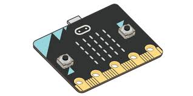
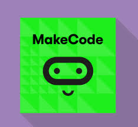
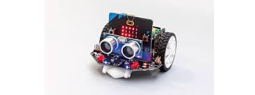

ROBOTEANDO MICROBIT CyR 1º ESO
ROBOTEANDO
De lo virtual a lo físico
Hasta ahora, hemos aprendido a programar en Scratch, un entorno visual donde arrastramos bloques para crear nuestras animaciones, juegos y proyectos. Ahora, vamos a dar un salto al mundo físico con Microbit.
 Microbit es una placa de programación pequeña y potente que nos permite controlar el mundo físico a través de la electrónica y la programación. Con esta placa podemos:
- Encender luces LED.
- Medir la temperatura.
- Crear sensores de movimiento.
- ¡Y mucho más.
Es como tener una computadora portátil, pero diseñada para interactuar con el entorno de formas muy sencillas.
 MakeCode es el lenguaje de programación que vamos a usar para trabajar con Microbit. Es muy similar a Scratch, ya que también utiliza bloques visuales para escribir código, pero ahora podemos controlar cosas en el mundo físico, como encender un LED o medir el movimiento.
Al usar MakeCode, programamos bloques de código que le dicen a Microbit qué hacer. Por ejemplo:
- Bloque de entrada: Si presionamos un botón.
- Bloque de salida: Microbit enciende una luz LED o reproduce un sonido.
¿Por qué aprender con Microbit?
Interacción directa: A diferencia de Scratch, donde las acciones ocurren solo en la pantalla, con Microbit podemos ver el resultado de nuestros programas en el mundo real.
Creatividad: Nos permite probar ideas nuevas y aprender cómo la programación puede afectar y controlar objetos físicos.
Fundamentos de la electrónica: Aprendemos conceptos básicos de cómo funcionan los circuitos electrónicos, algo muy útil si te interesa la tecnología.
También conocerás a Maqueen 
Objetivos de Aprendizaje
- Conocer qué es Microbit y cómo se puede usar para interactuar con el mundo físico.
- Aprender a programar con MakeCode, una herramienta que nos permite llevar nuestra creatividad a la realidad.
- Conectar lo aprendido en Scratch con el mundo de la programación en hardware, abriendo la puerta a nuevas posibilidades.
En resumen
|
Resumen: Microbit es una herramienta que conecta la programación virtual con el mundo físico. Aunque Scratch se usa en una pantalla, las posibilidades de Microbit nos permiten: - Crear programas que controlen luces, como un semáforo. ¡Vamos a programar! Con Microbit, tus ideas pueden cobrar vida fuera de la pantalla. Empecemos a experimentar y explorar este fascinante mundo de la programación física. |
Obra publicada con Licencia Creative Commons Reconocimiento Compartir igual 4.0